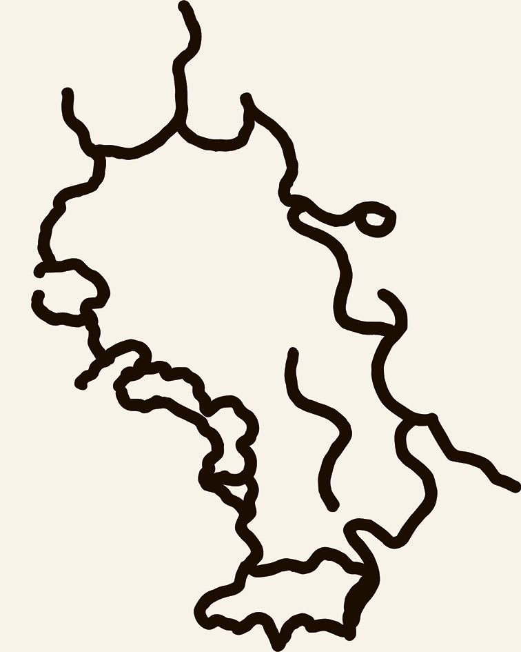
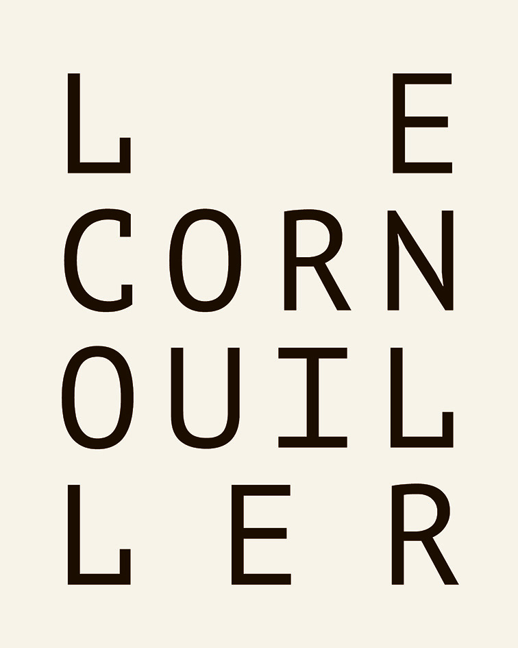
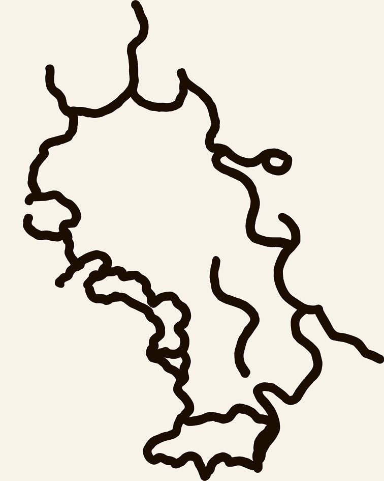
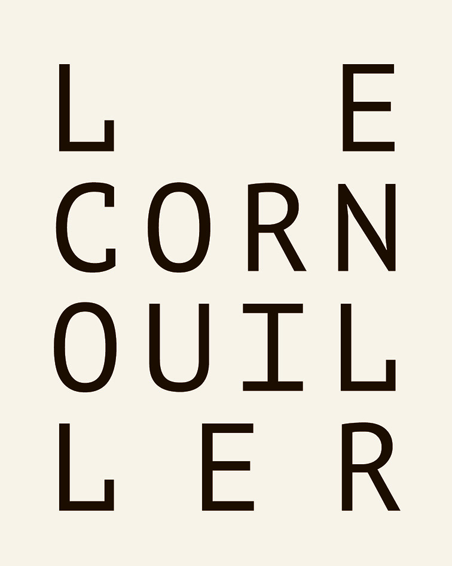
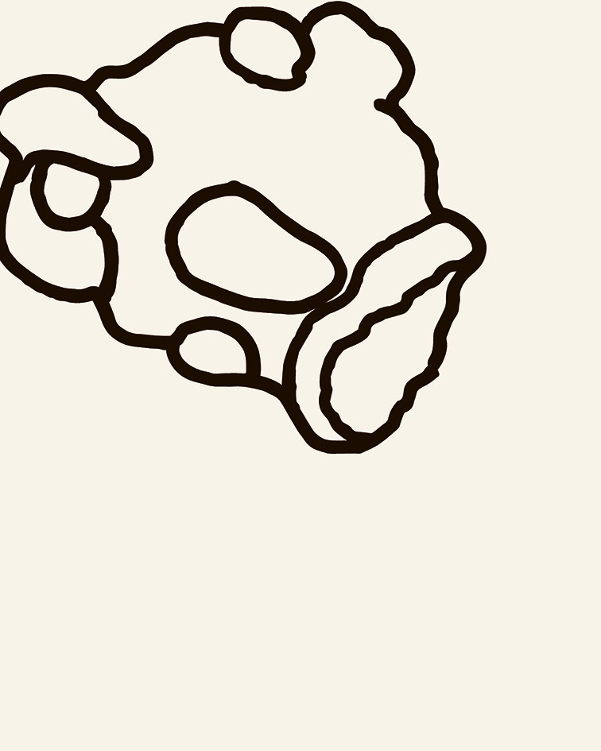
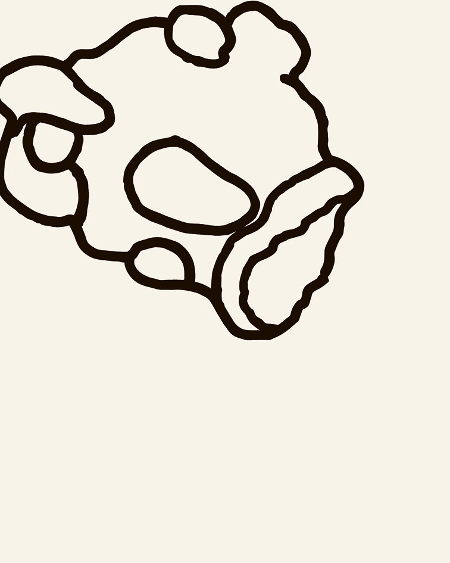

Nervures
Dessins d'observation sur le Cornouiller du jardin des plantes d'Amiens. Cet arbre est mort, il est exposé entouré de plante bouloné sur un axe méalique. Le projet final crée une fresque d'affiches qui montrent les formes abstraites dessinées d'après le volume de l'arbre. Ce volume organique est mis en parallèle avec la dureté des typographies classiques qui rappelle les boulons qui soutiennent l'arbre.
 



 
